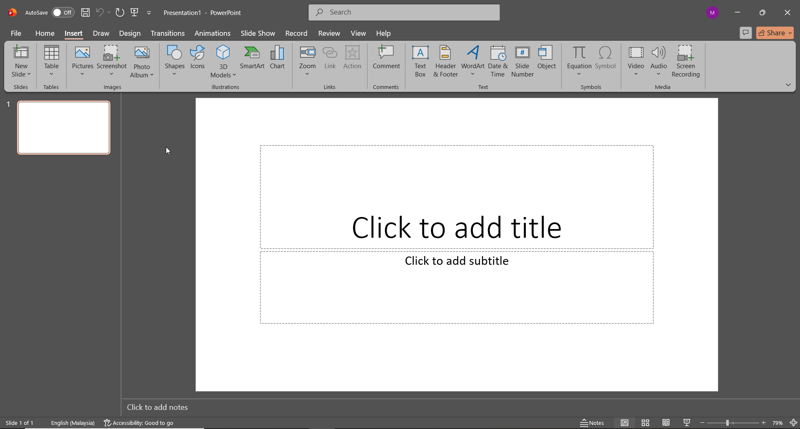
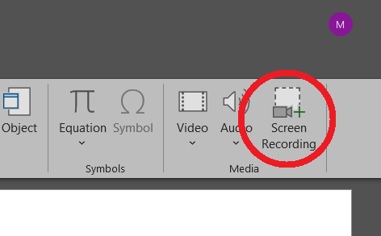
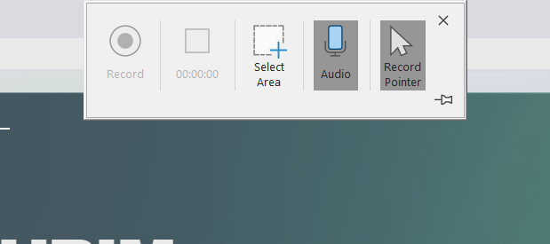
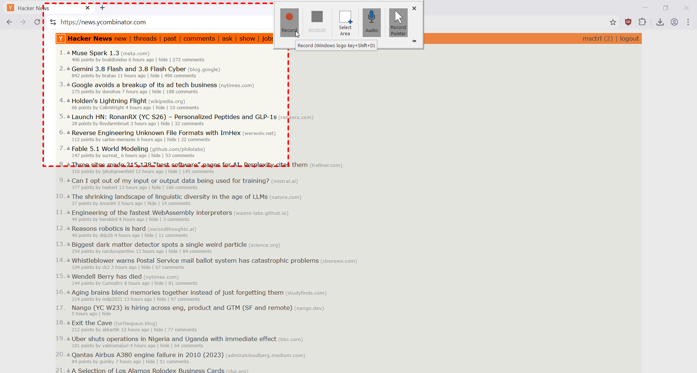
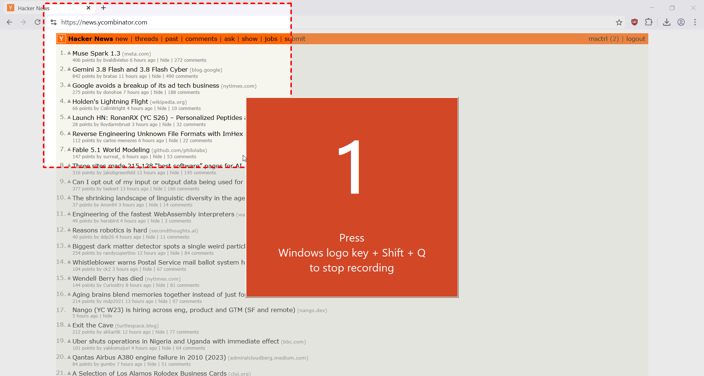
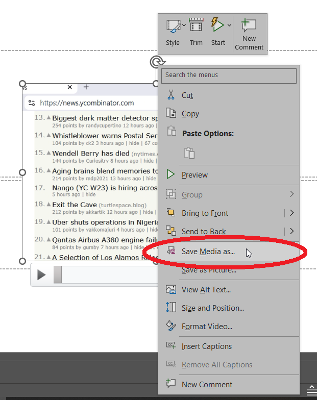
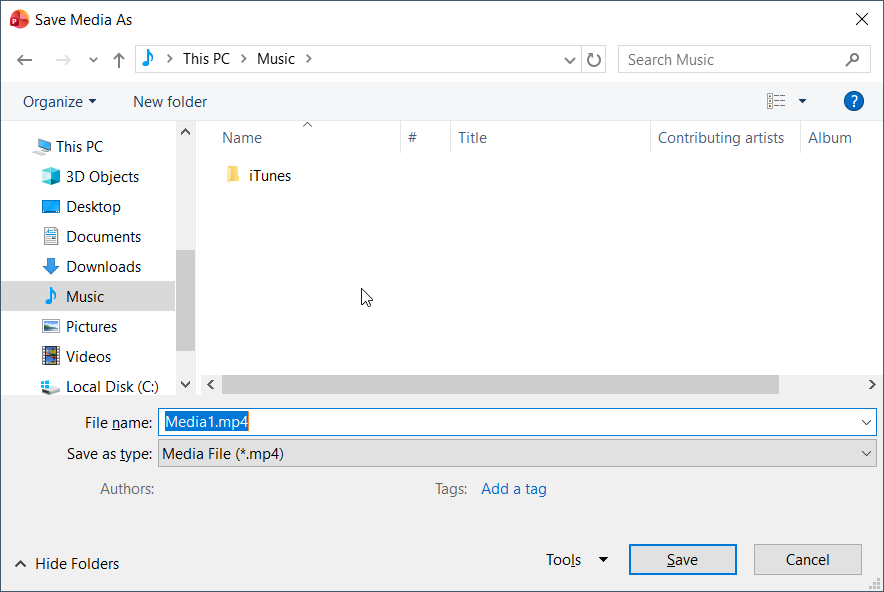
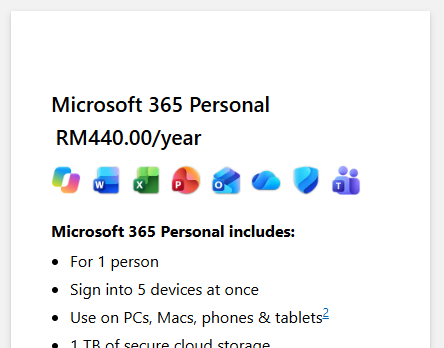

5 Sep 2026
A beautiful young female coworker is asking you how to attach file to email, for the 15th already! You don't have time for this.
It's time to send her a DIY tutorial video.
Obviously you want to use a proper screen recording software like most IT geek out there. But your company bought an overpriced office suite software. Therefore, we are going to use that.
That's right. We are going to use the Microsoft Office Powerpoint, to record screen.
Open up Powerpoint, and go to Insert

In the Media category, select Screen Recording

A small window will pop up. As you can see, we have several options prior to starting the record.

Select the area you wish to record, and click Record.

Remember, to end the recording, press Winkey + Shift + Q simultaneously.

The finished recording will be automatically pasted on the current slide. Right-click on it, and select Save Media as...

Select where you want to save the video, and you're done. You can finally relax now. Everytime she asked you to teach her some computer stuff, send her a video tutorial instead of coming to her desk. Tehee.

Footnote: For RM440 a year, Powerpoint can do more than just a presentation.

Mohamad Shahrim
author of The Laksamana